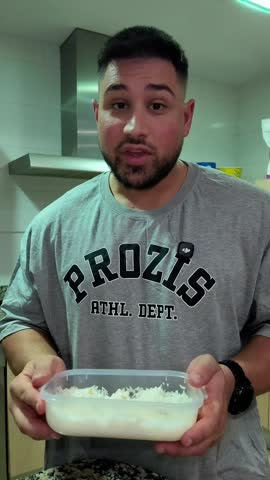
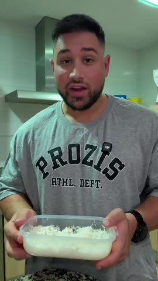
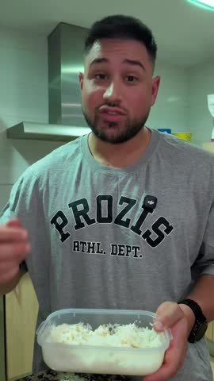
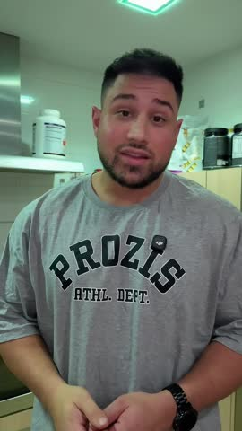
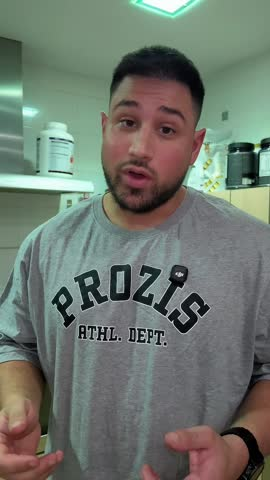
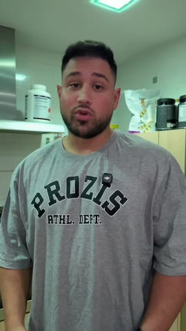
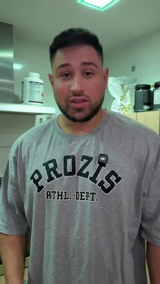

Tu plan. Cada línea del corte está a la derecha. La casilla de la izquierda es tuya: escribe qué se ve en pantalla. 71.2 s · 37 líneas.

¿Comes bien no baja la barriga?

No es tu genética,

son estos tres errores.

Un cliente mío

34 años

a lo mismo Carlos y yo como bien
los quitamos bajó 20

kilos en 3 meses.
Error número 1, comer sano no es comer poco.
El acita chorro, puñado de frutos secos,
el plato de arroz integralas arriba,
sí todo muy sano
y todo suma.
Error número 2, quedas corto de proteína.
Comes, a la hora tienes hambre otra vez y
acabas picando.
Y encima quieres mantener músculo mientras bajas,
la necesitas.
El tercero, el que más
frena.
viernes,
cera.
El sábado, cañas.
El domingo,
total.
Ya el lunes comienzo.
Y lo que había conseguido en toda una semana
dos días.
La barriga no baja por comer limpio,
la barriga baja
comes menos de lo que necesitan los siete días
de la semana,
cuatro.
Y si quieres saber cuáles son tus tres errores,
cambio por un mensaje me cuentas tu peso,
cómo entrenas qué comes.
Y te lo digo gratis.